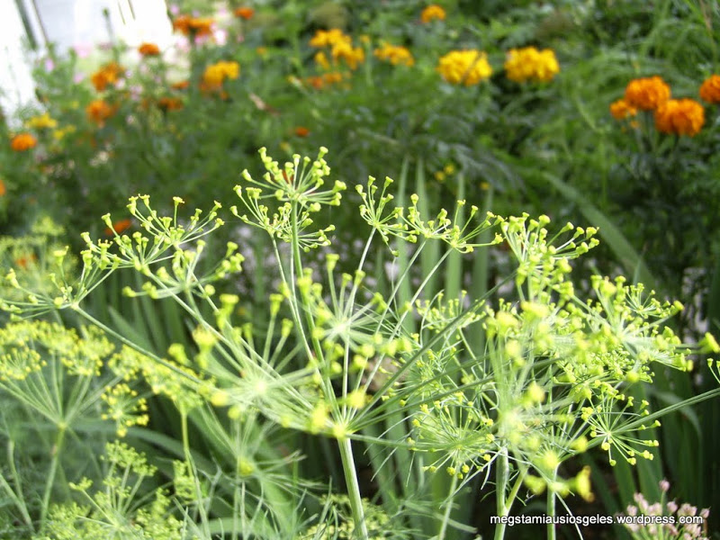

Welcome to daržovės
Daržovės | Dėžėmis - vaisiai ir daržovės pigiau
2020.10.29 08:44Pagrindinis Parduotuvė Apie mus Kontaktai Taškų sistema Taisyklės Privatumo politika Daržovės ir vaisiai Daržoves Vaisiai Uogos Premium Bakalėja Džiovinti vaisiai Riešutai ir sėklos Kruopos ir ankštiniai Konservuota produkcija Arbatos Aliejai Saldumynai Prieskoniai Gėrimai Kita produkcija Naujausia produkcija Specialūs pasiūlymai 0 Pagrindinis 0 Žiūrėti krepšelį 0 Norų krepšelis Paskyra
Dėžėmis - vaisiai ir daržovės pigiau
Įsigykite vaisius ir daržoves didmenine kaina tiesiai į namus!
My Account My Account Checkout Checkout Wishlist Wishlist Daržovės ir vaisiai pristatomi tik Vilniuje, Kaune ir jų rajonuose! Sveiki Prisijungti Krepšelis (0 produktai) 0.00 € Jūsų krepšelis dar tuščias Viso: 0.00 € Susisiekite su mumis +370 612 99 600 Pagrindinis Parduotuvė Apie mus Kontaktai Taškų sistema Taisyklės Privatumo politika Pradžia DaržovėsRodoma 1–12 iš 22
Avietiniai pomidorai, 2,5kg.
5.19 € Į krepšelį Akcija!Avokadas didysis, 1 vnt (300-500g)
3.95 € 2.49 € Į krepšelįHelouvyno moliūgas, 1 vnt
4.95 € Į krepšelįKalafijoras Romanesco, 1vnt
3.95 € Į krepšelįKopūstai, 10 kg
3.49 € Į krepšelįKriaušės ‘Conference’, 3 kg
3.95 € Į krepšelį Akcija!Lietuviškos bulvės 6kg.
3.18 € 1.99 € Į krepšelį Akcija!Lietuviškos bulvės, 15kg.
5.85 € 4.35 € Į krepšelįMuskatinis moliūgas, 1 vnt
8.95 € Į krepšelįPievagrybiai, 3kg
6.99 € Į krepšelįPlautos morkos, 10 kg
4.35 € Į krepšelįRauginti kopūstai, 800 g
1.69 € Į krepšelį 1 2Produktų kategorijos
Daržovės ir vaisiai Daržoves Vaisiai Uogos Premium Bakalėja Džiovinti vaisiai Riešutai ir sėklos Kruopos ir ankštiniai Konservuota produkcija Arbatos Aliejai Saldumynai Prieskoniai Gėrimai Kita produkcija Naujausia produkcija Specialūs pasiūlymaiFiltruoti pagal kainą
Naujienlaiškių prenumerata
Prisijunkite prie dėžėmis.lt prenumeratų ir gaukite geriausius pasiūlymus skirtus tiktai Jums!
Informacija
Apie mus Taisyklės Privatumo politika Taškų sistemamano paskyra
Paskyra Krepšelis Apmokėjimas Norų sąrašas +37061299600
info@dezemis.lt
© 2020 UAB „Fruitė“. Visos teisės saugomos.
0 0↑
X Mes naudojame slapukus (angl. cookies), kurie užtikrina, kad Jums bus patogu naudotis tinklalapiu. Jei toliau naršysite mūsų tinklalapyje, tai tolygu Jūsų sutikimui su slapukų naudojimu. Sutinku Privatumo politika